Implementing Design Patterns - Abstract and Observer Patterns
- The singleton pattern
- The factory pattern
- Features of .NET Core
- Console application
The singleton pattern
The singleton pattern is another GoF design pattern that is used to restrict the instantiation of a class to one object. It is used in situations where actions within a system need to be coordinated or access to data needs to be limited. For example, if access to a file needs to be restricted within an application to a single writer, then a singleton could be used to prevent multiple objects from trying to write to the file at the same time. In our scenario, we are going to use a singleton to maintain the collection of books and their inventory. The complexity of introducing a singleton into an application can be subtle; so, to gain a solid understanding of the pattern, we will cover the following topics:
- .Net Framework’s handling of processes and threads
- The repository pattern
- Race conditions
- Unit testing to identify race conditions
The repository pattern
An example of this could be GetInventoryCommand, AddInventoryCommand, and UpdateInventoryCommand objects; all of these objects use the same repository class. To begin, let’s consider the following interface that describes the methods that the repository will implement; it contains a method for retrieving the books, adding a book, and updating the quantity of the book: 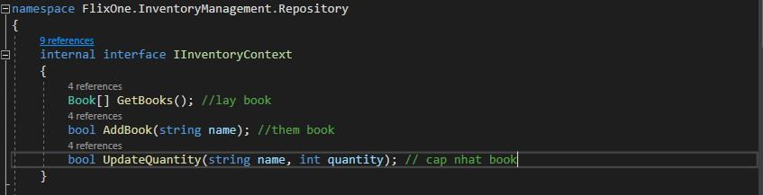 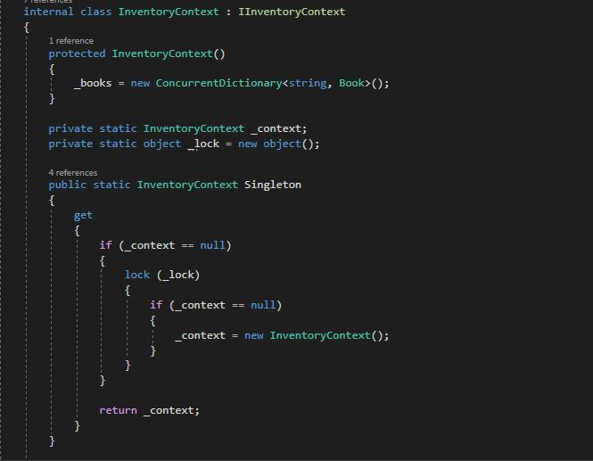 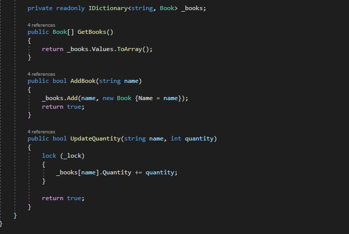
To illustrate the issues that the singleton pattern addresses, let’s start with a simple unit test that adds 30 books to the repository, updates the quantity of the different books, and then verifies the result. The following code shows the overall unit test, and we will explain each step individually: 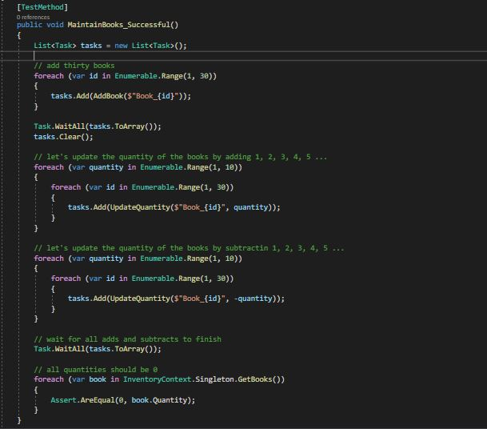
So, when the test is run in a single process, the repository works as desired. However, what if the update requests are performed in separate threads? In order to test this, the unit test will be refactored to perform calls to the InventoryContext class in separate threads. 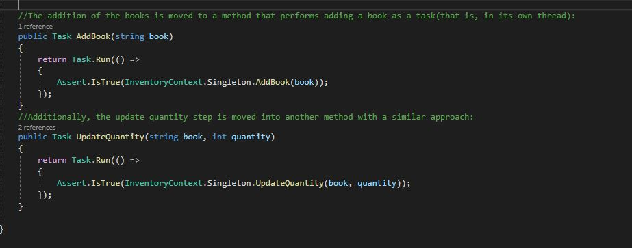 The unit test is then updated to call the new methods. It is worth noting that the unit test will wait untilall books are added before updating the quantity. 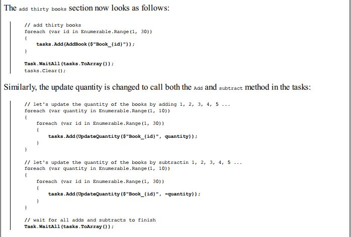
A race condition illustration
The following sequence of diagrams visualize what is happening conceptually between two
threads: ThreadA and ThreadB. The first diagram shows both threads without any values from the
collection:
 The following diagram shows that both threads read from the collection of the book with the name of
The following diagram shows that both threads read from the collection of the book with the name of
Chester:
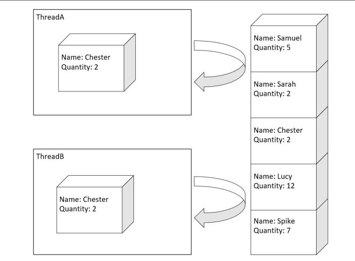
The following diagram shows that ThreadA updates the book by increasing the quantity by 4, while
ThreadB updates the book by increasing the quantity by 3:
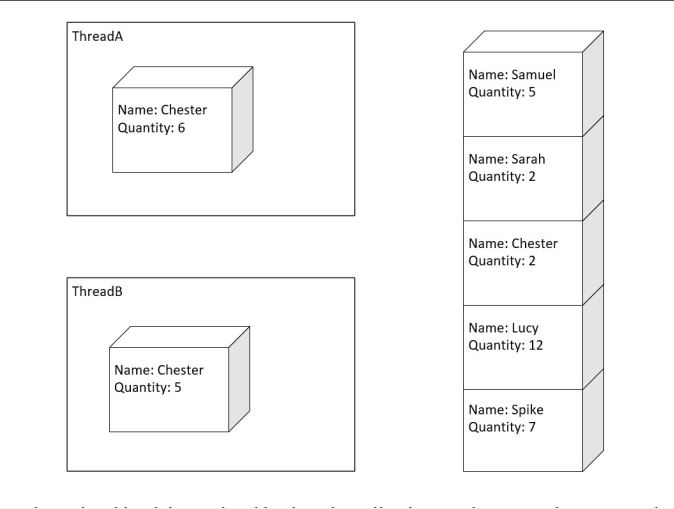
Then, when the updated book is persisted back to the collection, we have an unknown quantity as the
result, as shown in the following diagram:
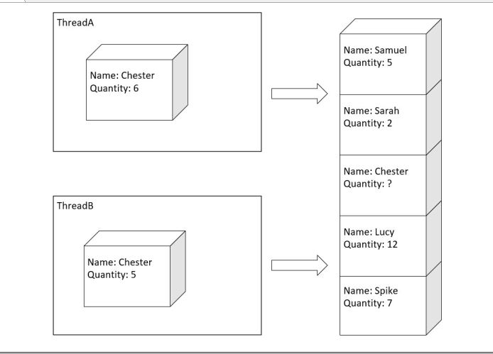
AddInventoryCommand
The first thing to note is that the repository, IInventoryContext, is injected in the constructor along with the IUserInterface interface described in the previous chapter. The command also requires a single parameter, name, to be supplied. This is retrieved in the GetParameters method that implements the IParameterisedCommand interface, which was also covered in the previous chapter. The command is then run in the InternalCommand method, which simply executes the AddBook method on the repository and returns a bool indicating whether the command has executed successfully. 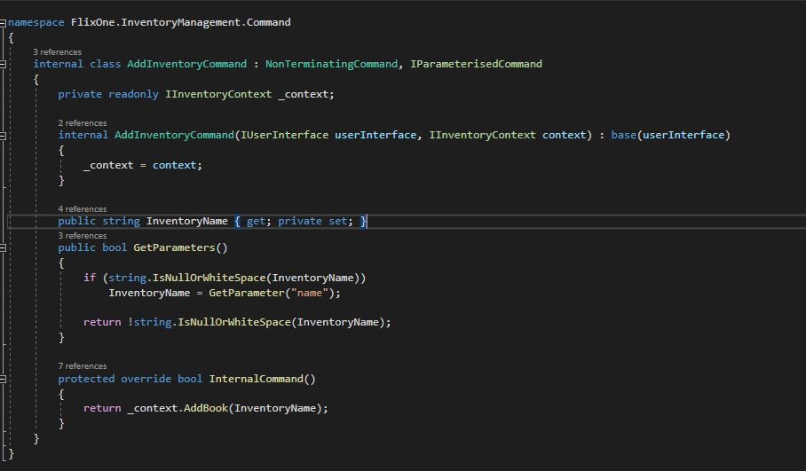
TestInventoryContext
Similar to TestUserInterface used in the previous chapter, the TestInventoryContext class will be used to
mock the behavior of our repository by implementing the IInventoryContext interface.
 The IInventoryContext methods are written to update and return just one of the collections and at At the end of the unit test, the two remaining methods can be used to determine the difference between the starting and ending collections:
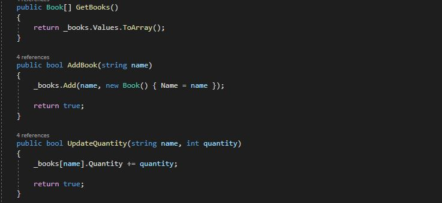
The IInventoryContext methods are written to update and return just one of the collections and at At the end of the unit test, the two remaining methods can be used to determine the difference between the starting and ending collections:
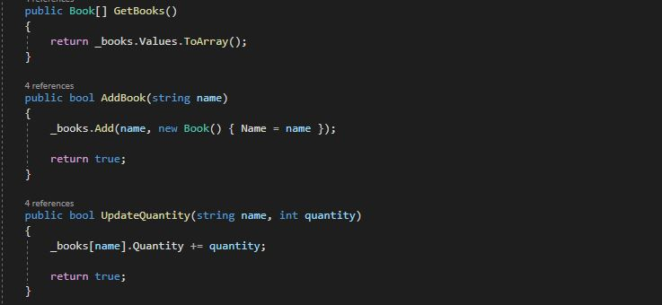

The factory pattern
The next pattern applied by the team is the GoF factory pattern. The pattern introduces a creator whose responsibility is the instantiation of implementations of a specific type. Its purpose is to encapsulate the complexity around constructing types. The factory pattern allows for more flexibility as the application changes, by limiting the amount of required change compared to whether the construction was in the calling class. This is because the complexity of the construction is in one location, instead of distributed in multiple locations across the application.
Example, InventoryCommandFactory implements the pattern and shields the details of constructing each of the different InventoryCommand instances. In this scenario, the input received from the console application will be used to determine the concrete implementation of InventoryCommand to return. It is important to note that the return type is the InventoryCommand abstract class, thus shielding the calling class from the details of the concrete class.
Features in .NET Core
Chapter 3, Implementing Design Patterns – Basics Part 1, and the first part of this chapter have
illustrated the GoF patterns without using any frameworks. It is worth covering this as, sometimes, a
framework is not available for a specific pattern or applicable in a particular scenario. Additionally,
it is important to understand what functionality the framework is providing in order to know when a
pattern should be used. The rest of this chapter will look at a couple of features that .NET Core
provides that support some of the patterns we have covered so far.